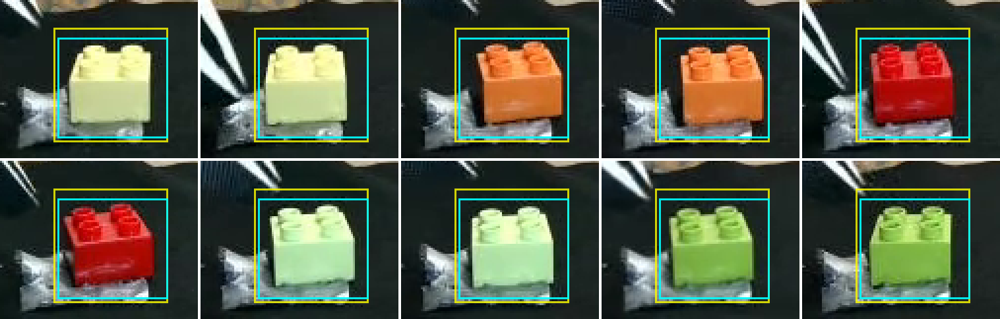
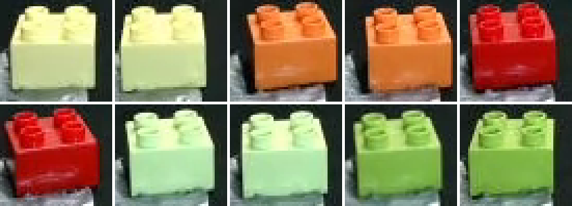

Photo trigger & crop
The defect model is only as good as its photos. Two small algorithms decide which video frame becomes the photo, and which pixels of it the model sees. The same code builds the training photos and was meant to run live, so training and live photos follow one rule.
When to take the photo
Each rotation ends with the arm parked at a reset pose X. That moment is the photo. X is the median start pose of the ten recorded rotations. The trigger watches the four joints that place the arm in the camera's view (shoulder pan, shoulder lift, elbow, wrist flex). Let d be the largest gap between any of them and X.
| Step | Condition | Why |
|---|---|---|
| Arm | d > 15 at some point since the last photo | The arm must actually leave before it can come back. A block resting at X at the start is not a photo. |
| In pose | d ≤ 10 | Lets a policy that only gets close to X still trigger the photo. |
| Fire | In pose for 5 frames in a row (0.17 s), then disarm | Ignores a quick pass through the pose. The gap between 10 and 15 stops jitter firing twice. |
Joint values are normalised to −100…100, so ±10 is 5% of each joint's range.
Tested on the real recordings
The extracted photos are pixel-identical to the same frames decoded straight from the videos, so the trigger picks exactly the frame it claims to.
Which pixels to keep
At the reset pose the claw tips are still in the side camera's view. If the claw ends up in the photo, its position varies, and the model would score it as an anomaly. So every photo is cut to one fixed box: x 60, y 130, 54 × 49 pixels of the 320 × 240 frame.

The box was measured, not eyeballed. Each block's outline was found by colour across the ten photos (x 62–111, y 132–176). That leaves 1–2 pixels of margin around every block, while the closest claw tip stops about 7 pixels short of the box.

A tight crop also helps the model directly. In a full frame a 3-pixel dot covers a fraction of one PatchCore feature cell. Cropped and resized, it covers one or two cells.
What we chose not to do
We considered centring the crop on each block by its colour. We rejected it: wrong colour is one of the defects we want to catch, so a colour-based crop could hide the very thing it should find. A fixed box treats every block the same.
Not wired in. The live control loop never used the trigger. It used a fixed timer and a gripper check, and the gripper check reads the wrong events (it fires on "open" then "closed on nothing"). Using the trigger as the end-of-rotation signal was step 7 of the integration plan.